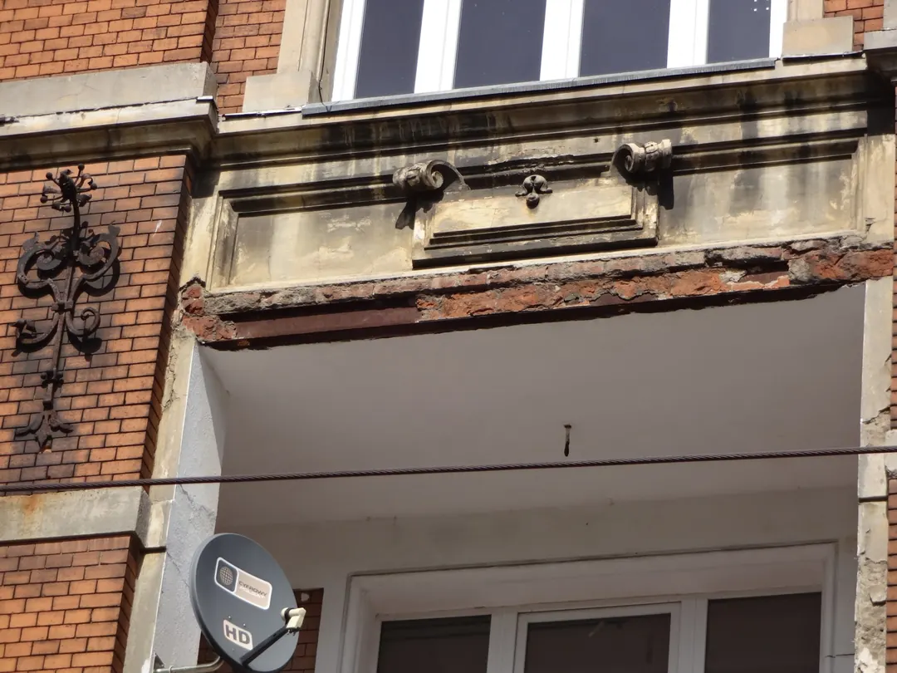
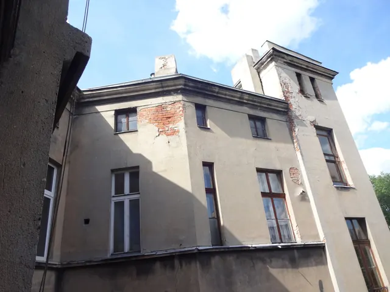
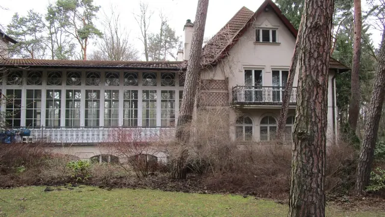
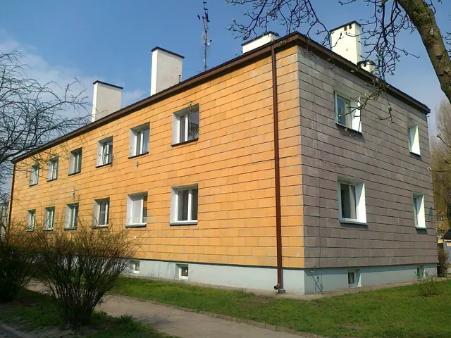
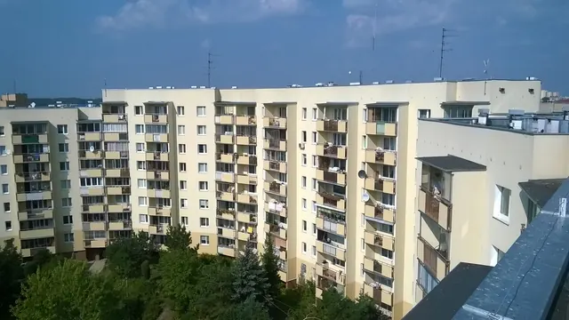

Drobne naprawy budynków w ŁodziNaprawiamy w porę, zanim mała usterka zamieni się w kosztowny remont.
Zgłoś usterkęDla właścicieli i zarządców nieruchomości. Łódź i okolice.

Mała naprawa dziś, mniejszy rachunek jutro
Wieloletnie zaniedbania kończą się remontami, których można było uniknąć. Bieżące naprawy obniżają koszty utrzymania budynku, a zrobione na czas nie dopuszczają do większych szkód.
Pracujemy dla wszystkich właścicieli i zarządców nieruchomości, dla których liczy się dobry stan techniczny budynku.


Zakres prac
Elewacja i tynki
- Naprawy i uzupełnienia tynków
- Naprawy elewacji, cokołów, ościeży drzwiowych i okiennych
- Naprawy docieplenia budynków
- Naprawa opasek przy budynkach
Dach i kominy
- Doszczelnienia pokrycia dachów
- Naprawy tynków na kominach
Wnętrza i klatki
- Naprawy ścian po zalaniach
- Naprawy płyt gipsowo-kartonowych
- Malowanie klatek schodowych i wiatrołapów
- Naprawy posadzek i wyszczerbionych schodów
Wokół budynku
- Naprawy i malowanie słupków i ogrodzeń
- Przycinka drzew i krzewów
- Wiele innych napraw konserwacyjnych i remontowych
Takie usterki naprawiamy
Rysy, ubytki, nieszczelne pokrycia i zniszczone elementy elewacji. Im wcześniej, tym taniej.





Zimą zdejmujemy sople i śnieg
Usuwamy sople i nadmiar śniegu z dachów, balkonów i tarasów. Zmniejsza to ryzyko niekontrolowanego upadku i niechcianych przecieków.
- Sople z okapów i rynien
- Nadmiar śniegu z dachów
- Balkony i tarasy
Po przeglądzie technicznym budynku
Masz protokół z przeglądu z listą usterek? Przeglądy techniczne wykonuje Biuro Inżynierskie Jarosław Drymer, a zalecone drobne naprawy możemy wykonać od razu po nim.
Zgłoś usterkę
Opisz, co trzeba naprawić i gdzie stoi budynek. Odezwiemy się z terminem oględzin i wyceną.